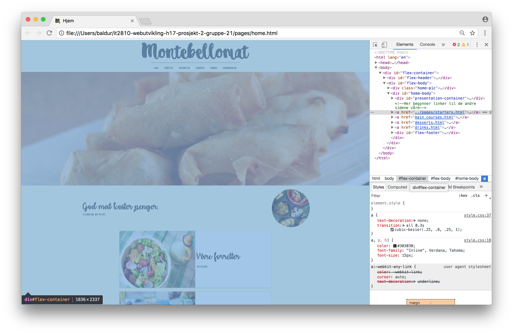
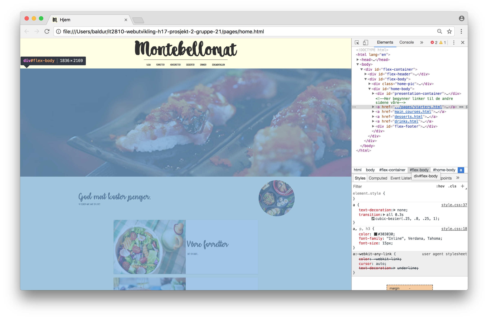
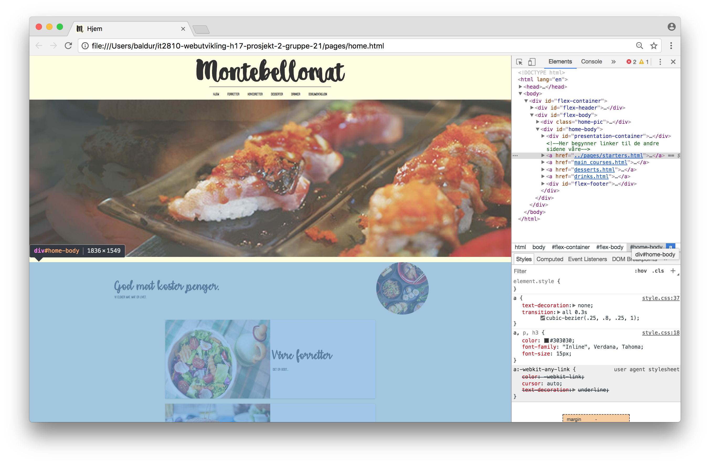
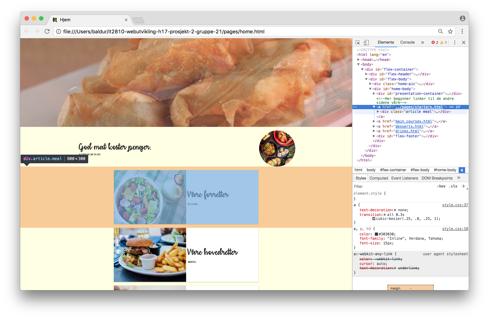
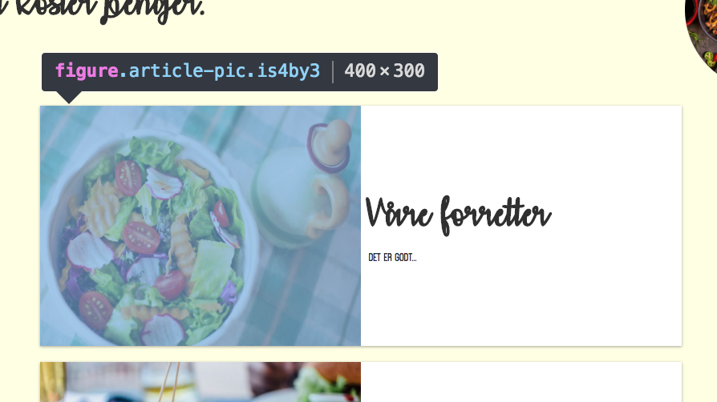
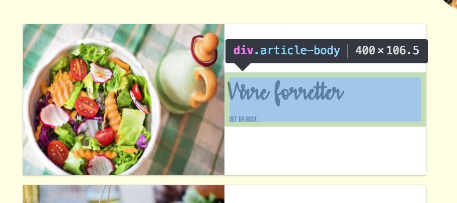
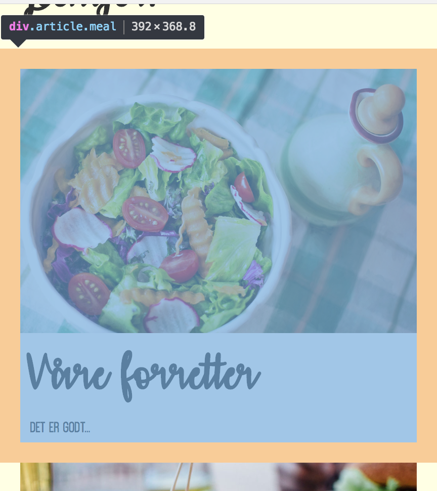

Montebellomat

Dokumentasjon
Bruk av node.js og express som webserver. Skriptet skal gjengis og beskrives på dokumentasjonssiden.
Her må noen skrive noe fornuftig.
Bruk port 8082 slik at prosjektet kan finnes på http://it2810-XX.idi.ntnu.no:8082 hvor XX er gruppenavnet.
Express og nodejs har blitt satt opp og installert på VM i for å lage kjøremiljø for webserveren. Når server.js kjøres med nodejs i /local/prosjekt21/it2810-webutvikling-h17-prosjekt-2-gruppe-21 opprettes det en webserver som kan nås ved http://it2810-21.idi.ntnu.no:8082. Den baserer seg på express.
Bruk CSS Flexible Box Layout Module: Overordnet layout av komponentene på siden skal baseres på bruk av CSS Flexible Box Layout (også kalt flexbox layout). Hvordan dette er tatt i bruk skal beskrives på dokumentasjonssiden.
Her har vi brukt en flex-container for hele nettsiden og inni den har vi brukt en flex body med elementer som alle baserer seg på display:flex. Se bilder for illustrasjon. Vi har her bare valgt ut bilder for å demonstrere bruken av flex:




De to følgende bildene er flex-elementer inne i article.meal


Fordelen med flex er naturligvis regelhåndtering når man krymper skjermstørrelsen. Følgende bilder er tatt når man navigerer på mobil:

Legg merke til at da flyttes div.article-body under bildet fordi da er det mer naturlig at innhold leses ovenfra og ned og ikke fra venstre mot høyre som er mer naturlig på stor skjerm.
Navigasjonsbaren skal implementeres ”fra bunnen av” (eksempelvis ikke baseres på eksisterende ui-elementer fra andre bibliotek).
Navigasjonsbaren er bygget på ren HTML, CSS og Jquery. Ingen bootstrap eller noe annet bibliotek. Vi har brukt en blanding av CSS @media-query og Jquery-spørresetninger for å få den til å kollapse og vise burgermenyen når man justerer skjermstørrelsen: Dette er hva som står i js-fila:
//Show and hide navbar
$(document).ready(function(){
$("#navpic").click(function(){
$("#flex-nav").toggle();
});
checkWidth();
});
let width = $(window).width();
$(window).resize(function() {
width = $(window).width();
//console.log("sjekker");
checkWidth()
});
function checkWidth(){
if (width >= 650) {
$("#flex-nav").css('display','flex');
}
else {
$("#flex-nav").css('display','none');
}
}
Dette er hva som står i css-fila:
#navpic {
width: 30px;
height: 30px;
padding: 5px;
Display:none; /*legg merke til at burgermenyen til vanlig ikke vises. Denne vises kun når @media-setningen inntreffer. Se under */
}
@media screen and (max-width: 650px) {
#navpic {
display:flex;
margin: auto;
}
}
På nettstedet skal det være bruk av ajax-funksjonaliteten. Hvordan dette benyttes kan dere bestemme selv. En mulighet er at sidene lastes etter hvert som de velges i navigasjonsmenyen.
Fornuftighet må skrives.
Dere skal bruke jQuery, og det er kun lov å bruke basis-biblioteket (og ikke UI-biblioteket).
- I løsningen skal dere ha med:
- jQuery selector-funksjonaliteten
- en eller flere funksjoner fra jQuery APIet
- funksjon som parameter
- form for event-håndtering (f.eks. assosiere funksjoner med elementene i navigasjonsbaren).
- Hvordan dere har løst disse punktene skal beskrives på dokumentasjonssiden
Navigasjonsbaren (se over) er et eksempel på hvordan vi har tatt i bruk jQuery. For eksempel sjekker jQuery bredden på nettsiden hver gang skjermvinduet endres:
$(window).resize(function() {...kode…}
Vi bruker også jQuery til å gjøre burger(meny)-ikonet klikkbart til å toggle funksjonen på å vise/skjule navbar:
$(document).ready(function(){
$("#navpic").click(function(){
$("#flex-nav").toggle();
});
checkWidth(); //her kalles checkWidth() funksjonen for å sjekke hvorvidt burger-ikonet skal vises eller ei
});
Web-siden skal ha responsive web design og tilpasse seg skjermer/enheter av forskjellig størrelse
Det er brukt Flex i utbredt grad, og nettsiden har @media-kode som inntreffer når skjermstørrelsen når en viss størrelse som gjør at nettsidens elementer organiseres annerledes. jQuery brukes også for å tilpasse mobilstørrelser bedre.